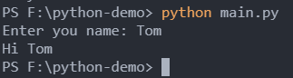

Python系列-7-输入输出
概述
本文我们学习下输入输出函数，之前多次用到的print就是输出函数，可以再控制台打印数据，类似nodejs的console.log。但是Python的输出函数更强大。还有输入函数input 与 File对象的一些方法
input
使用input([prompt])读取一行，将其转换为string类型并返回：
name = input("Enter you name: ")
print(f"Hi {name}")
运行后会进入一个交互式命令行：

print的原型如下：
print(*objects, sep=' ', end='\n', file=sys.stdout, flush=False)
- *objects:要在控制台输出的数据，可以是多个，用,逗号隔开
- 第二个是数据之前的分隔符
- 第三个是加在输出的末尾的
一般我们使用的只有前3个参数。
print(1,2,"6") # 1 2 6
print(1,2,"6",sep="&",end="--") # 1&2&6--
格式化输出，format
和C语言一样，我们可以使用占位符%?，其中?代表不同的字符，例如%s代表字符串，%d代表十进制整数，%f代表浮点
name="Jack"
age = 25
print("你好%s，你的年龄是%d" %(name,age)) # 你好Jack，你的年龄是25
字符串后的%用来说明是哪些变量要替换前面的占位符，当只有一个变量的时候，可以省略括号
格式化输出，占位符
利用string对象的format方法，进行格式化:
print("你好{0}，你的余额是{1:.2f}".format("Potato",3.1)) # 你好Potato，你的余额是3.10
{0}代表占位符和format里的参数对应，{1:.2f}，冒号后是格式控制，代表保留两位小数
这样用起来不太方便，也可以改成：
m=(format(3.1415,".2f"))
print("你好{0}，你的余额是{1}".format("Potato",m)) # 你好Potato，你的余额是3.14
File对象
Python open() 方法用于打开一个文件，并返回文件对象，在对文件进行处理过程都需要使用到这个函数，如果该文件无法被打开，则会抛出错误。
open() 函数常用形式是接收两个参数：文件名(file)和模式(mode)。
open(file, mode='r', buffering=-1, encoding=None, errors=None, newline=None, closefd=True, opener=None)
使用 open() 方法一定要保证关闭文件对象，即调用 close() 方法:
try:
f = open('o.txt', 'r')
print(f.read())
finally:
if f:
f.close()
# 使用with语句简化书写过程
with open("i.txt",'w+') as f:
f.write("Hi! I am writing")